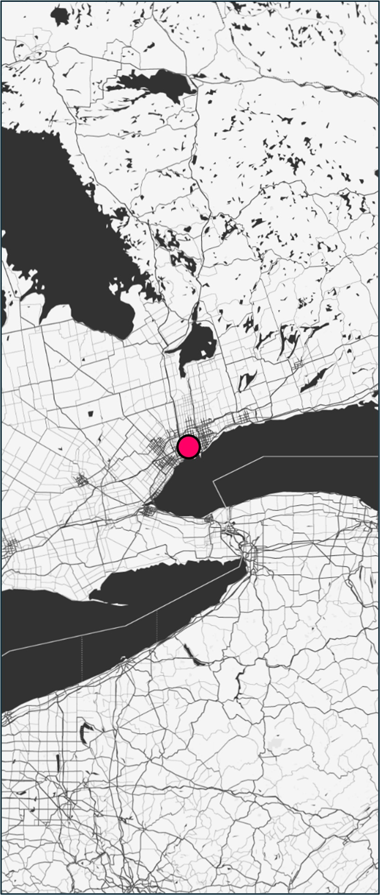
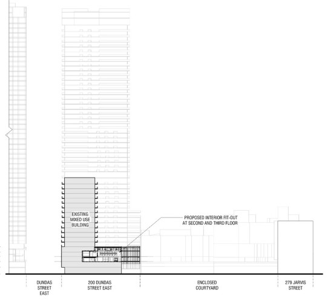
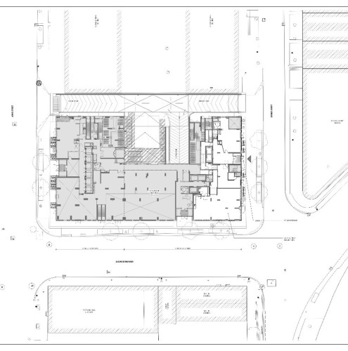
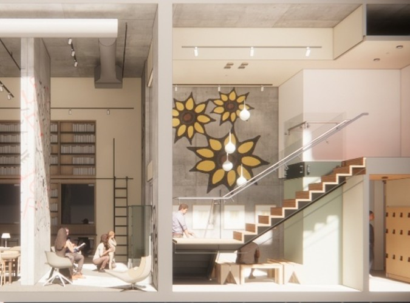

Indigenous Centre for Innovation and Entrepreneurship • Retrofit
Toronto, ON
Located at 200 Dundas Street East in Toronto, the Indigenous Centre for Innovation and Entrepreneurship (ICIE) occupies a dedicated space within a new condominium at the corner of Jarvis and Dundas. By capitalizing on the existing high-volume interior, the design introduces a new mezzanine that maximizes rentable floor area while creating a unique, multi-functional event atrium.
The project spans three levels, providing a platform for Indigenous-owned businesses and entrepreneurs to engage effectively with the community. As a cornerstone of Canada’s first-ever urban Indigenous Business and Cultural District, ICIE is set to transform the Dundas Street East corridor into a world-class hub for Indigenous innovation and leadership.
The interior architecture weaves Indigenous knowledge and storytelling into the physical environment. The layout accommodates traditional gatherings and includes provisions for ceremonial smudging throughout the facility. Custom design elements—including resilient flooring and carved ash boards—feature narratives illustrating traditional medicines, such as sage, cedar, and tobacco.



Reception
The entry sequence is defined by a welcoming reception hub positioned directly adjacent to the primary elevator bank. This transition point sets the material and textural tone for the rest of the multipurpose facility.
Entrance to Knowledge House
Positioned as the project's heart, the Knowledge House sits directly behind the reception and adjacent to the primary circulation stair. This central volume serves as a high-visibility focal point, grounding the facility’s mission of shared learning and community engagement.
Knowledge House Library
Functioning as the center's intellectual heart, the Knowledge House offers a dedicated environment for reflection and shared learning.
It is an emotional anchor within the facility, providing a warm, inclusive space that honors the diverse perspectives of the community.
Event Space
At the heart of the facility, the main event space serves as a sacred and social clearing. Designed with a dedicated ventilation strategy for smudging, the space is further defined by a symbolic floor inlay of First Nations medicines, weaving ancestral knowledge directly into the building's physical fabric.
Co-working Space
The primary event volume is framed by a perimeter of co-working zones. This radial arrangement ensures that private work environments remain visually connected to the building's communal core while maintaining acoustic separation.

Project Info
- Project Name: Indigenous Centre for Innovation and Entrepreneurship | City of Toronto Retrofit
- Year Completed: 2026
- Location: Toronto, ON, Canada
- Firm: Brook McIlroy Incorporated
- Position: Project Architect/Manager